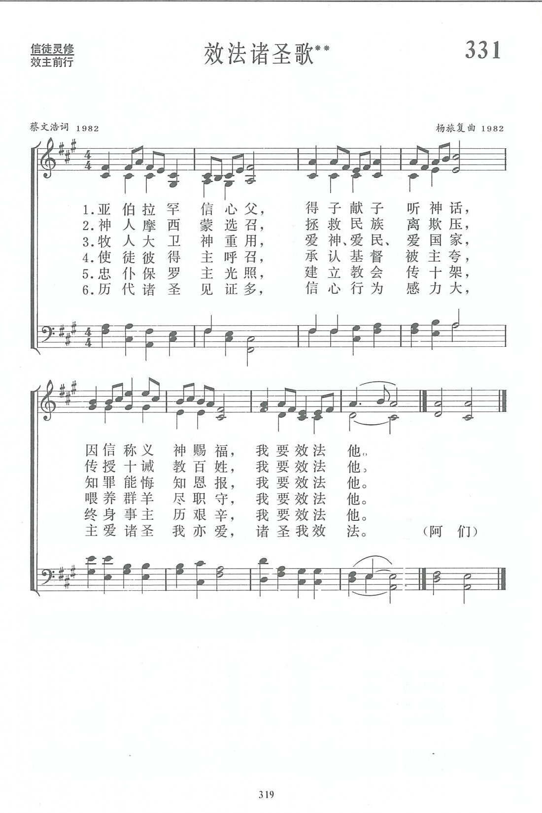

|
|
|
|
|
第331首《效法諸聖歌》 |
|
https://www.zanmeishige.com/tab/14004.html?songbook=1&index=331
 |
|
|
|
|
-

https://www.youtube.com/watch?v=9PNN2PJmuOo
第331首 效法诸圣歌** _蔡文浩 LEARNING FROM THE SAINTS
经文：“我们既有这许多的见证人，如同云彩围着我们，就当放下各样的重担，脱去容易缠累我们的罪，存心忍耐，奔那摆在我们前头的路程”(来12：1)。
这首诗的作者蔡文浩牧师(简历参阅第11O首)谈到写这首诗的动机，是为了“抒发我对圣经中几位圣贤的爱慕之情，见证他们怎样用信心和行为的感力，为上帝成就了大事。希望大家一起效法他们健全而平衡的信仰生活”。
蔡文浩认为，基督徒的信仰生活往往是坎坷不平的。有的遭遇是出于上帝的磨炼，为使其生命生长得更丰盛；但也有的困难是由于自己的错误追求所造成的。如有人片面追求脱离现实的“属灵”，使自己陷入了生活的死胡同里，遭受许多不必要的苦恼，实为可悲现象。
蔡文浩从圣经中看到诸位圣徒的榜样。他们所以能被上帝重用，作了大事，乃是由于他们的信仰生活是健康的；信仰与生活之间，信心与行为之间是平衡的。他们多么爱上帝，又多么爱人。他们不以追求个人的属灵享受为目的，而是处处为别人打算。他们的生活中也有坎坷的经历，但他们没有走入歧途，而是按上帝的选召作成该作的工。这应该是我们今天的基督徒所效法的榜样。
歌词共六节，
前五节列举亚伯拉罕、摩西、大卫、彼得、保罗为例，
每节后面以“我要效发他”的愿词结尾。
第六节是总结，最重要的一句是“信心行为感力大”，落脚于“诸圣我效法”。
曲调作者杨旅复(简历参阅第81、110首)对这首诗的理解是：既有追念诸圣的含义，也有效法他们的好榜样的积极意愿。
为此她在前三句叙述诸圣事迹的部分，使用表达怀念之情的小调式，但旋律却逐句上升，达到高潮，使人如见诸圣先贤高大挺拔的形象。
最后一句表心迹时，使用大调式，充分显出坚定的诚意。
曲调恬静，深沉。又有虔诚的韵味，但很流畅，易唱，这也是一个特点。